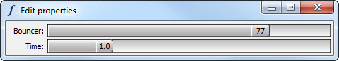

The HasFacets base class defines a small set of helper methods designed to simplify the process of creating and managing facets animations for many common cases. While these methods will handle most bread and butter scenarios, there may be cases involving creating and managing collections of concurrent or sequentially executing animations where you may need more control. In these cases you may want to augment using these methods with direct use of the underlying animation classes, such as ConcurrentAnimation or SequentialAnimation.
The helper methods provided by the HasFacets class are:
Creates and returns a FacetAnimation object for the facet specified by name. The begin and end values for the animation are specified by begin and end respectively. If begin is omitted, the current value of the facet is used as the begin value. If begin is specfied, then end may be omitted, in which case the end value will be the current value of the facet; otherwise the end value must be specified (unless start is False).
The animation runs for the number of seconds specified by time, which defaults to one (i.e. 1.0) second. The animation repeats the number of times specified by repeat, which defaults to one. If repeat is zero, the animation runs forever or until explicitly halted. If reverse is True (the default), alternating animations run in reverse, creating a ping-pong or bouncing effect. If reverse is False, each repetition runs from the begin value to the end value.
Path specifies the path object used for the animation. If omitted, the method attempts to supply a default path based on the data type of the specified facet. For example, if the facet value is an int, a LinearIntPath is used. If no reasonable path object can be determined, the path facet on the created FacetAnimation object is not set.
Tweener specifies the tweener object used for the animation. If omitted, the tweener facet on the created FacetAnimation object is not set.
If both start and replace are True, any currently running or pending animations for the specified facet are halted and discarded prior to starting the new animation. If start is True and replace is False (the default), then if there is no currently running animation for the specified facet, the newly created animation is started. Otherwise, if an animation is already active, the new animation is queued to the end of a list of animations waiting to run for the specified facet. As each active animation completes, the next waiting animation is automatically started.
As noted above, if start is True (the default), the created FacetAnimation object is automatically started if no other animations are currently running for the specified facet. If start is False, then the FacetAnimation object is not automatically started. In addition, the FacetAnimation object is not added to the queue of animation objects associated with the specified facet. In this case it is the reponsibility of the caller to start the animation running and perform any other animation management tasks.
The method always returns the FacetAnimation object created. Note that depending upon the value of the start and replace arguments and whether there are any animations already running for the specified facet, the animation object returned may or may not already be in the running state.
Returns a list of all FacetAnimation objects for the list of facets specified by names, or for the entire object if no names are specified.
If running is True, then only the FacetAnimation objects currently running are returned. If running is False (the default), then all FacetAnimation objects for the specified facet names are returned, including those that are waiting for currently running animations to complete.
Note that this method only returns FacetAnimation objects created by calling the animate_facet method. Any animation objects created by other means are not included in the result.
Halts all currently running animations for the list of facets specified by names, or for all object facets if no names are specified.
If flush is True (the default), the method also discards any animations for the specified facets that are waiting for currently running animations to complete. If flush is False, any animations waiting for the halted animations to complete will start running automatically.
The following code shows a simple example using some of the helper methods just described:
from facets.api import *
class Bouncer ( HasFacets ):
bouncer = Range( 0, 100 )
time = Range( 0.1, 5.0, 1.0 )
view = View(
Item( 'bouncer', width = 400 ),
Item( 'time' )
)
def facets_init ( self ):
self.animate_facet(
'bouncer', time = self.time, begin = 0, end = 100, repeat = 0
)
def _time_notify ( self ):
self.halt_animated_facets( 'bouncer' )
self.facets_init()
Bouncer().edit_facets()
In the example we have one animated facet, bouncer, whose value ranges between 0 and 100, and a time facet used to interactively control the length of time for the bouncer animation cycle.
The facets_init method is used to start the animation when the Bouncer object is first created, and is also called each time the time facet changes value. Because the repeat value is specified as 0, the animation runs continuously until explicitly halted, which is why the _time_notify method, called each time the time value is changed used the lower slider control, uses the halt_animated_facets method to stop the current bouncer animation before starting a new one.
The following screen shot shows the example running:
